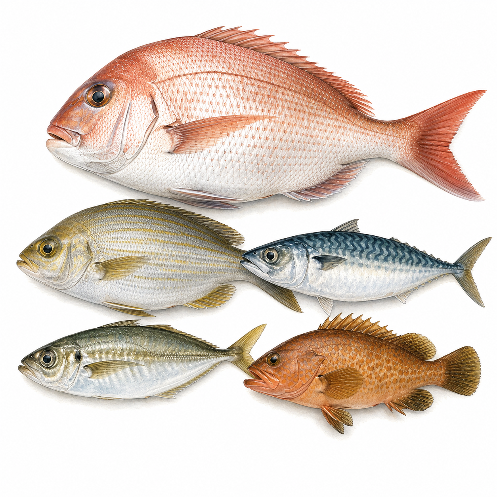

タイ五目
タイ五目
過去1年 1,065件
本日の釣果報告は集計待ち
過去1年の月別釣果件数（単位: 件）
| 港・エリア | 最大サイズ | 記録日 |
|---|---|---|
| 大洗港 | 77cm | 2025/05/11 |
| 大洗港 | 68cm | 2026/04/11 |
| 茅ヶ崎港 | 65cm | 2025/11/03 |
| 茅ヶ崎港 | 64cm | 2025/09/23 |
| 大洗港 | 63cm | 2026/03/29 |
| 1月 | 2月 | 3月 | 4月 | 5月 | 6月 | 7月 | 8月 | 9月 | 10月 | 11月 | 12月 | |
|---|---|---|---|---|---|---|---|---|---|---|---|---|
| 数釣 | ||||||||||||
| 型釣 |
※ 過去3年の関東船釣り釣果データより集計（2023〜2025年）
相模湾・外房が主流。マダイを軸に、イサキ・タチウオ・アジ・カワハギなど多種が期待できる混合漁場。時期で主流魚が変わるため、毎回の船宿情報が重要。春はマダイ・イサキ、秋はタチウオが増える傾向。
マダイ 25〜50cm、イサキ 20〜35cm、タチウオ 40〜70cm、複数種狙いのため目安範囲は広い
初心者から上級者まで楽しめる汎用釣法。毎回異なる魚が釣れるため飽きにくい。船宿の情報と時間帯選択が釣果を左右する。
過去1年の実績では平塚港・茅ヶ崎港・大洗港が中心です。各エリアの詳細ページで実績をご確認いただけます。
本日の釣果報告はまだ届いていません。出船情報は各船宿のWebサイト・電話で直接ご確認ください。出船報告があり次第このページに反映されます。
本ページの月別釣果トレンドで過去1年の月別件数をご確認いただけます。
過去1年の実測サイズは平均 36.0cm（最大 77cm）。マダイ 25〜50cm、イサキ 20〜35cm、タチウオ 40〜70cm、複数種狙いのため目安範囲は広い
相模湾・外房が主流。マダイを軸に、イサキ・タチウオ・アジ・カワハギなど多種が期待できる混合漁場。時期で主流魚が変わるため、毎回の船宿情報が重要。春はマダイ・イサキ、秋はタチウオが増える傾向。
